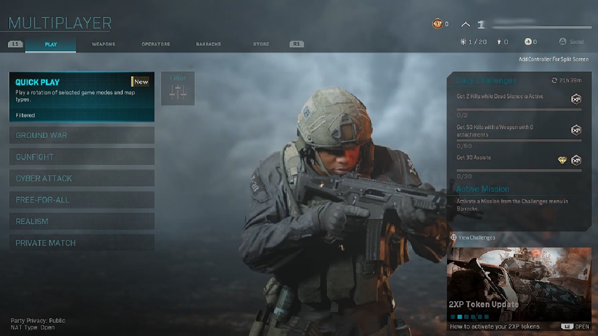

De multiplayer van Modern Warfare heeft verschillende gamemodes die je kan spelen.
Als je de multiplayer open zie je links een menu staan waar alle gamemodes instaan, op deze pagina behandelen we alle gamemodes die er zijn.
In elk van deze gamemodes heb je verschillende objectives: het doel van de gamemode.
Die staan ook uitgelegt bij alle gamemodes.
Team Deathmatch
Dit is de meest bekende gamemode.
In deze gamemode speel je met 2 teams tegen elkaar met als objective om met jouw team als eerste 200 kills te halen, of om de meeste kills te halen als de timer om is.
Als je doodgaat respawn je onmiddelijk en de timer staat meestal rond de 10 minuten.
Free For All
Deze gamemode is hetzelfde als team deathmatch alleen in plaats van dat je in 2 teams zit speelt nu iedereen voor zich.
Het aantal kills om te winnen is ook wat minder (normaal gesproken 50) maar de timer blijft wel hetzelfde.
Headquarters
Nu word het ingewikkeld.
Gunfight
Deze gamemode is geïntroduceerd in Modern Warfare.
In gunfight speel je dus 2 tegen 2 in rondes, er zijn in totaal 11 rondes dus wie het eerste 6 wint, wint het spel.
Om de 2 rondes krijg je een willekeurig wapen uit de game, iedereen heeft dan die 2 rondes hetzelfde wapen.
In 1 ronde kan je niet respawnen en health generation staat uit, dus iedereen heeft aan het begin van een ronde 100 hp en als je dan bijvoorbeeld voor 20 hp geraakt word krijg je die er niet meer bij tot de volgende ronde.
Gunfight kan in 1v1, 2v2 of 3v3 en kan alleen op de gunfight maps gespeeld worden.
Search & Destroy
Search & Destroy is een andere gamemode die gespeeld word in rondes.
Er zijn 2 partijen die